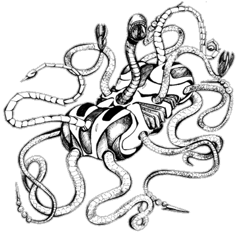

The following material is from
THE THIRD INVID
WAR, a fan supplement by
Dave Deitrich and
Chris
Meadows. Please feel free to use, copy, and distribute
it as you see fit. All we ask is that you give proper credit to us and do not
claim that it is your own work. Comments and suggestions are welcome.
Mecha design and illustration by AMY BORDEN
(borden@alexia.lis.uiuc.edu).
THE KRAKEN INORGANIC

BACKGROUND
One of the first new Inorganic designs ever seen on Earth, the Kraken is a
testimony to the ingenuity and cruelty of the
Stage 6 Invid. The Kraken is
designed to be an anti-personel weapon, able to quietly move around the
countryside and pick off any lone wanderers or resistance fighters it
encounters. The basic design for the body is loosely based on the
Invid Retrieval Drone reported seen in some hives (see Invid Invasion page
88). The cylindrical body of the inorganic is propelled by an antigravity
field that allows the robot to move rapidly and with great agility. 13
different tentacles are connected to this central body, and can be extended
up to an average distance of 15 feet (4.7 m) away from the main body or
retracted completely into it. These tentacles end in a variety of different
weapons, including vibro-blades, claws, lasers, and even paralysis beams.
The central tentacle of the body contains an eye sensor that gathers visual
and sensor data for the robot.
The most dangerous aspect of the Kraken is its stealthiness. The
antigravity generator that propels the inorganic is virtually silent, allowing
the robot to approach and attack its victim without making a sound. Krakens
can lay hidden in trees, streams, rubble, etc. for days, weeks, months, or
even years, and only pop out to attack when a potential target draws near.
Unlike the Inorganics constructed by the Regent, the Kraken does NOT need
an Invid brain to control it, and can operate on its own without any outside
help or control. The inorganic does possess a limited amount of intelligence;
for example, it will know enough to not attack a large heavily-armed party of
resistance fighters since it would almost definitely be destroyed.
Instead, the Kraken may
track the resistance fighters at a distance and try to pick them off one by
one while they are resting. Whenever a Kraken encounters a target it will
communicate the location and type of contact to the nearest hive within
its communication range, and the hive brain may give it special instructions
at that time, if necessary (i.e. "capture a prisoner" instead of "kill the
entire party").
The Kraken Inorganic was first encountered in the central United States area
in early 2044. Distribution of the robot has been restricted mostly to the
eastern half of North America, though some have been reported in Europe.
They are most commonly found in the central plains/great lakes region
(Kansas, Illinois, Indiana, Ohio) but it is likely that the design shall
spread to other sectors if deemed successful by the
Stage 6 Invid.
RPG STATS
Invid Name: "Gitamma"; REF Nickname: "Kraken"
Vehicle Type: Anti-personel Robot
Crew: None.
M.D.C. BY LOCATION
[1] Main Body 150
[2] Eye Tentacle (1) 45
Claw Tentacles (2) 35 each
Spike Tentacles (4) 35 each
Heavy-Duty Tentacles (4) 50 each
Laser Tentacles (2) 35 each
NOTES:
- [1]
- Destroying the main body will completely destroy the Inorganic. The
smoking remains will fall to the ground and crumble into scrap metal.
- [2]
- Destroying the eye tentacle will deprive the Kraken of its main
sensor capabilities. It will not be able to see its targets and will
flail its tentacles around rapidly trying to strike anything close to
it (-5 to strike). If the eye tentacle is destroyed the Kraken will
usually try to retreat and return to base for repairs (it can find
its way back without sensors). The eye tentacle is a small target and
imposes a -4 penalty to hit for attackers.
SPECIFICATIONS
- Flight:
- Stationary hover to 400 mph (640 kmph) in open air. Cruising speed near
ground level is usually 100 mph (160 kmph) or less. The Kraken can use
its antigravity generator to lift itself up to 300 ft (91.5 m) above any
surface.
- Swimming:
- The Kraken can propel itself under water at speeds up to 75 mph (120
kmph) and can dive up to 2 miles below the surface.
- Space:
- The Kraken can operate in space or without air. However, without nearby
mass to push against with its antigravity generator it will drift
helplessly in zero gravity.
- Height:
- Main Body: 2.5 ft (0.75 m)
- Width:
- Main Body: 7 ft (2.1 m)
- Length:
- Main Body: 4.5 ft (1.3 m)
- NOTE: The tentacles on the Kraken can extend up to 15 ft (4.7 m) in
any direction from the main body. They can also retract completely into the
body when not needed.
- Weight:
- 2 tons
- Cargo:
- The antigravity generator (which was designed for speed and stealth
instead of strength) can carry up to 5 tons.
Abilities:
- Flight - 85%
- Tracking: Humanoid, Mecha, or Land Vehicle - 70%
- Tracking: Protoculture Powered Mechanism - 88%
- Navigation: Air, Land, Water - 90%
- Prowl - 70%
- Detect Ambush - 55%
- Detect Concealment - 65%
- Thermal (passive infrared sight) - Range: 1000 ft (305 m)
- Nightvision (passive night sight) - Range: 2000 ft (609 m)
- External Audio Pickup - Range: 300 ft (91.5 m)
- Audio/Video Communications - Range: 25 miles
WEAPON SYSTEMS
- LASERS: Two of the Kraken's tentacles end in high powered lasers
that serve as the inorganic's main weapons. Since they are mounted on
tentacles they can be fired in virtually any direction and can even
fire around corners while the Kraken remains hidden.
- Primary Purpose: Assault
- Secondary Purpose: Defense
- Range: 4000 ft (1200 m)
- Damage: 3D6 M.D. per laser blast. Bursts are not possible, but
the laser can be fired in a continuous stream for cutting/demolition
if necessary (2D6x10 M.D. per round).
- Rate of Fire: Four attacks per melee. Can also be fired in a
full melee continuous beam, but suffers a -4 to strike a moving target.
- Payload: Unlimited
- Bonuses to Strike: +1 to strike, plus protoculture targeting
bonuses.
- PARALYSIS BEAM: The two clawed tentacles on the Kraken contain
an experimental paralysis beam built into the center of the claw. This
beam temporarily overloads the nervous system of a humanoid target,
effectively paralyzing him or her. Involuntary reflexes (breathing,
heartbeat) are USUALLY not affected, but there have been a few reported
cases where the paralysis beam has been fatal. The beam can even work
through high-tech body armor, but has an extremely short range.
- Primary Purpose: Capture
- Range: 30 ft (9 m)
- Damage: None, but the victim must roll under his (P.E. - 12)
or be paralyzed for 1D6x10 minutes. The character gets a +1 to his
roll for every 25 points of MDC between him and the beam, including
body armor and mecha. Characters with over 200 MDC are automatically
immune to the beam. If the character rolls a 20 on his P.E. roll,
he also goes into shock and takes 4D6 S.D.C. damage,
directly from hit points.
- Rate of Fire: One shot per tentacle, per round.
- Payload: Unlimited
- Bonuses to Strike: +1 to strike, plus protoculture targeting
bonuses.
- HAND-TO-HAND COMBAT. The tentacles of the Kraken make it a deadly
hand-to-hand combatant. Four of the inorganic's arms end in
vibro-blade spikes that can cut through high-tech armor easily.
The other four tentacles are powerful constrictors that can crush
a human to death even through body armor (P.S. of 50).
- Attacks Per Melee: 4
- Hand to Hand Bonuses: +1 to strike, +3 to parry,
+6 (!)to dodge in flight, +3 to roll with impact.
- Damage:
- Vibro-spike slash: 2D6 M.D.
- Vibro-spike jab: 3D6 M.D.
- Vibro-spike power jab (counts as two attacks): 1D4x10 M.D.
- Claw Jab: 1D6 M.D.
- Claw Crush: 1D6 M.D. per round.
- Strong Tentacle Slap: 1D4 M.D.
- Strong Tentacle Constrict: 2D6 M.D. per round.